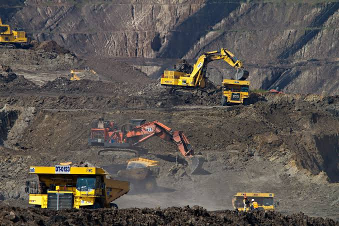
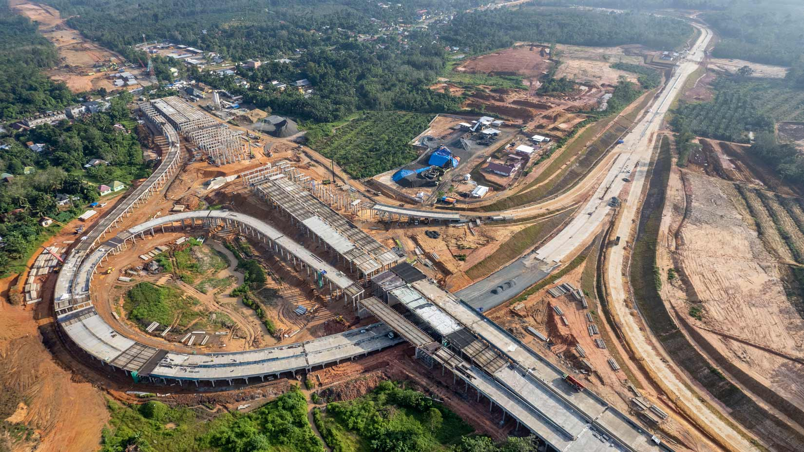

Pembangunan
Berkelanjutan
Pembangunan berkelanjutan adalah pembangunan yang memenuhi kebutuhan generasi sekarang tanpa mengurangi kemampuan generasi mendatang untuk memenuhi kebutuhan mereka sendiri. Pembangunan ini memperhatikan keseimbangan antara aspek ekonomi, sosial, dan lingkungan. Dengan demikian, sumber daya alam dapat digunakan secara bijak, kesejahteraan masyarakat meningkat, dan kelestarian lingkungan tetap terjaga untuk masa depan.
Contoh Pembangunan Berkelanjutan
Penggunaan energi terbarukan

Memanfaatkan energi matahari dan angin untuk mengurangi ketergantungan pada bahan bakar fosil.
Reboisasi dan penghijauan

Menanam kembali pohon untuk menjaga keseimbangan ekosistem dan mengurangi kerusakan hutan.
Pengelolaan sampah dan daur ulang

Mengolah kembali sampah agar mengurangi pencemaran dan penggunaan sumber daya baru.
Transportasi ramah lingkungan

Mengembangkan transportasi umum dan kendaraan listrik untuk mengurangi polusi udara.
Dampak Positif
Meningkatkan kesejahteraan masyarakat.
Menjaga kelestarian lingkungan.
Mengurangi pencemaran dan kerusakan alam.
Menghemat penggunaan sumber daya alam.
Mengurangi kesenjangan sosial dan ekonomi.
Menciptakan kualitas hidup yang lebih baik untuk generasi mendatang.
Dampak Negatif
Membutuhkan biaya dan investasi yang cukup besar.
Membutuhkan teknologi yang lebih ramah lingkungan.
Memerlukan kerja sama antara pemerintah, masyarakat, dan sektor swasta.
Membutuhkan perubahan kebiasaan masyarakat.
Penerapannya membutuhkan waktu yang panjang.